Toggle menu
Freepik
AI Suite
Create
Edit
Explore AI Suite
AI Image Generator
Create images from words in real time
AI Video Generator
New
Create stunning videos from text or images
Mockup Generator
Bring designs to life, effortlessly
AI Voice Generator
New
Turn text into a stunning voiceover in seconds
Designer
Beta
Edit templates from your browser
AI Icon Generator
Beta
Create icons in seconds with AI
Background Remover
Erase the background from an image
Upscale
Increase resolution and details
Reimagine
Create image variations with AI
Expand
Resize any image filling the gaps with AI
Retouch
Replace details quickly and easily
Image Editor
Edit photos easily online, no software needed
Images
Vectors
Photos
Illustrations
Explore all images
Explore all vectors
Illustrations
Backgrounds
Textures
Patterns
Cartoons
Clip art
Drawings
Symbols and signs
Silhouettes
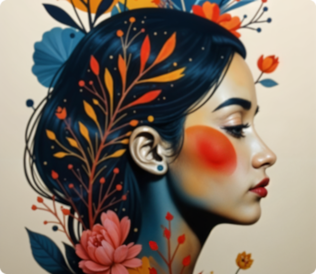
AI Image Generator
Create images from words in real time
Explore all photos
Business and marketing
Lifestyle and wellness
Nature
People and emotions
Food and drinks
Education and learning
Sport
Industry and technology
AI Image Generator
Create images from words in real time
illustrationsAll
Explore illustrations
AI hub
Icons
Explore all icons
Black filled
Hand drawn
Black outline
Lineal color
Flat
Gradient
AI Icon Generator
Create icons in seconds with AI
Videos
Explore all videos
Backgrounds and others
Nature
Travel and places
Business and technology
People and emotions
Events
Food and drinks
Sports
AI Video Generator
Create stunning videos from text or images
Templates
Explore all templates
Logo maker
Poster maker
Flyer maker
Business card maker
Resume maker
Banner maker
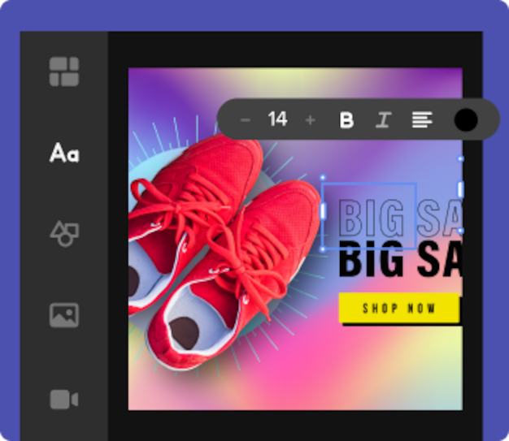
Designer
Edit templates from your browser
PSD
Explore all PSD
Stationery
Social media
Greeting cards
Flyers
Business cards
Posters
Invitation cards
Banners
Logos
Mockups
Explore all mockups
Apparel
T-shirt
Devices
iPhone
Print
Books
Packaging
Business card
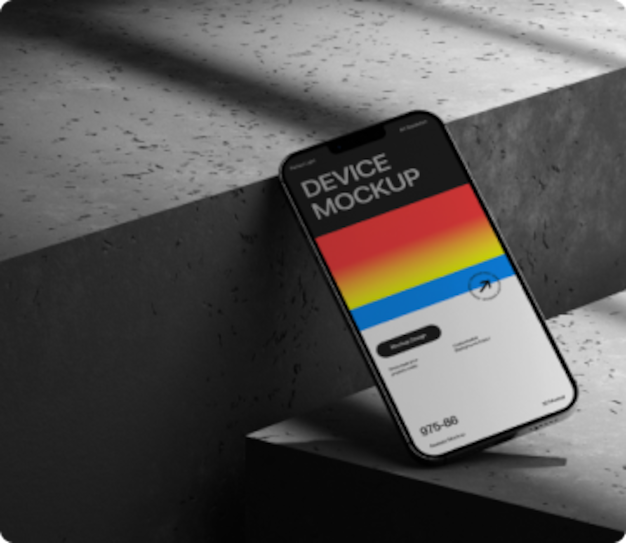
Mockup Generator
Bring designs to life, effortlessly
3D
New
Explore all 3D models
Furniture
Packaging
Home and decor
Miscellaneous
Icons
Seats
Signs
Bottles
More
Our squad
Magnific
Upscale and transform images like magic
Slidesgo
AI Presentation Maker
Enhanced solutions
API
Solutions to enhance your enterprise
Sell content
Join Freepik’s contributors and cash in your creations
More content
Fonts
Free fonts for book covers, merchandise, magazines...
Tunes
Curated music and voiceover generator
Apps and plugins
Freepik for Figma
Images for your Figma projects
AI Figma plugin
Generate your own unique AI images directly in Figma
Start creating
Pricing
Notifications
3
Freepik
Clear
Search by image
Advanced search
Search
Open Filters
Filters
Photos
PSD
Vectors
Blood donation logo
Blood test logo
Blood drop logo mockup
Blood drop logo invitation
Blood drop logo splash
Blood drop logo mark
Blood drop logo social media
Blood drop logo print
Blood drop logo corporate
Blood drop logo advertising
Asset type
Vectors
Illustrations
Photos
Icons
Videos
PSD
Templates
Mockups
3D Models
Fonts
License
Free
Premium
AI-generated
Orientation
Color
People
File type
Editable online
Blood Drop Logo Images
Images
33k
Collections
2
Sort by:
Most relevant
Blood logo
Cure
Donor
Add to collection
Add to collection
Like
Discover similar
Blood drop
Blood logo
Blood donation
Add to collection
Add to collection
Like
Discover similar
Blood logo
Cure
Donor
Add to collection
Add to collection
Like
Discover similar
Blood transfusion
Blood logo
Cure
Donor
Premium
Blood drop
Cancer patient
Cancer treatment
Blood drop
Blood transfusion
Blood donation
Premium
Healthcare
Diagnosis
Blood transfusion
Blood drop
Cure
Premium
Blood transfusion
Blood drop
Blood logo
Blood donation
Donor
Blood donor
Premium
Blood sugar
Diabetic
Insulin
Cartoon illustration
Cartoon
Cute illustration
Premium
Blood logo
Blood drop
Premium
Hospital sign
Premium
Blood transfusion
Blood drop
Blood logo
Blood transfusion
Paramedic
Blood drop
Blood transfusion
Blood donation
Donor
Premium
Blood logo
Blood drop
Premium
Blood logo
Blood drop
Hospital sign
Blood transfusion
Blood drop
Salud
Blood drop
Health
Medic
Donor
Cure
Plasma
Blood drop
Drop
Droplets
Blood donor
Donor
Blood donation
Donor
Blood donation
Cure
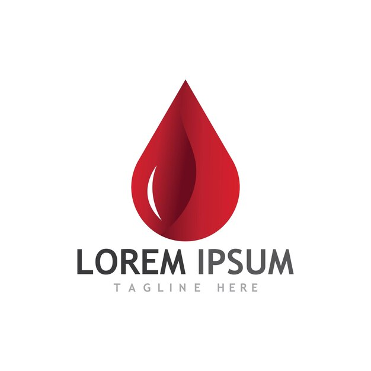
Premium
Blood logo
Blood drop
Blood drop
Blood transfusion
Hospital
Premium
Blood logo
Blood drop
Cardiology
Donor
Cure
Plasma
Donor
Cure
Plasma
Premium
Borders frames
Border
Frame ornament
Premium
Victorian
Frame ornament
Decorative frame
Blood transfusion
Blood drop
Healthy heart
Blood drop
Blood logo
Premium
Blood logo
Blood drop
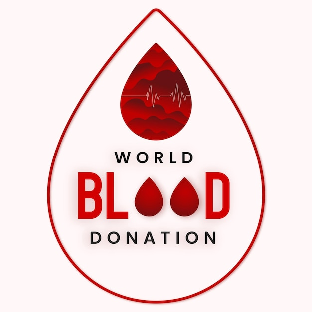
Creative design
Blood drop
Art design
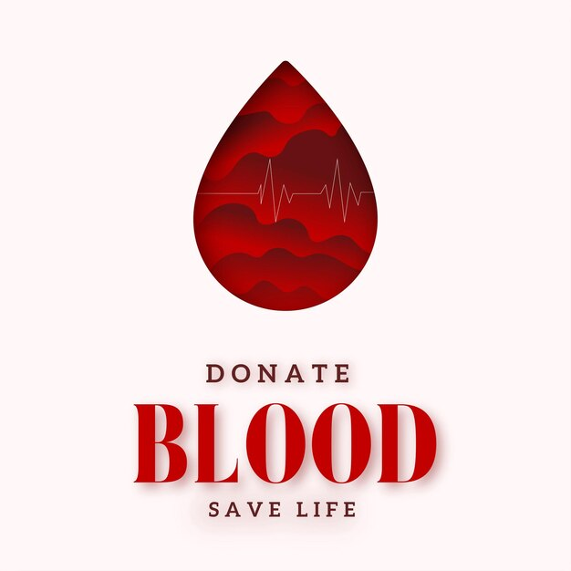
Creative design
Blood drop
Art design
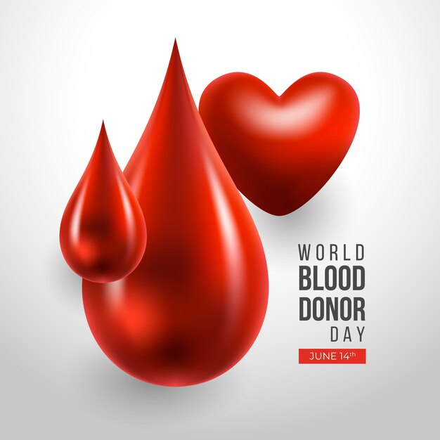
Blood donation
Donor
Blood donor
Donor
Cure
Plasma
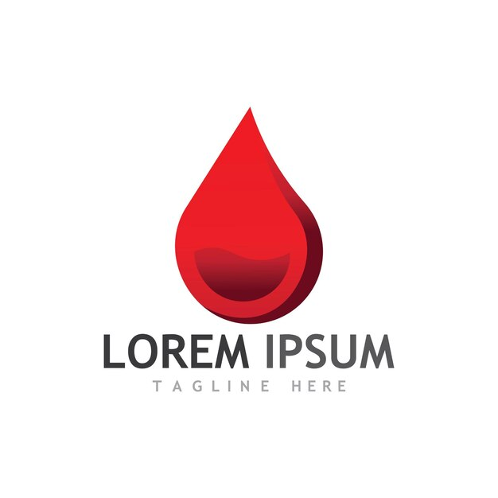
Premium
Blood logo
Blood drop
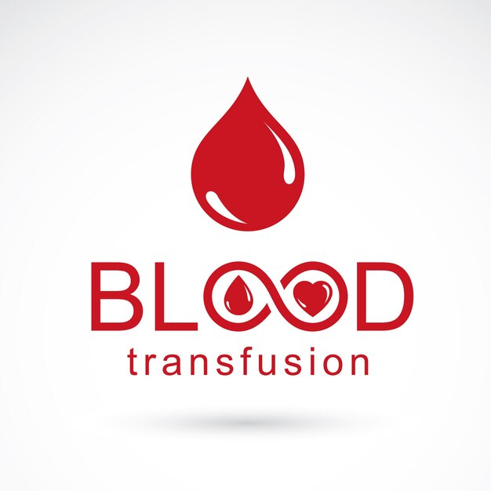
Premium
Blood drop
Blood logo
Blood transfusion
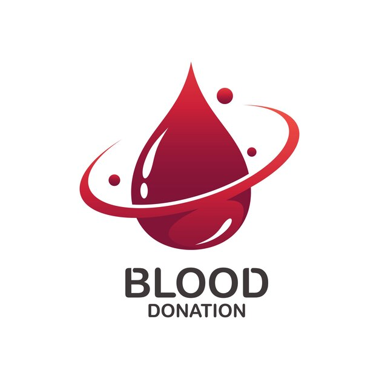
Premium
Blood logo
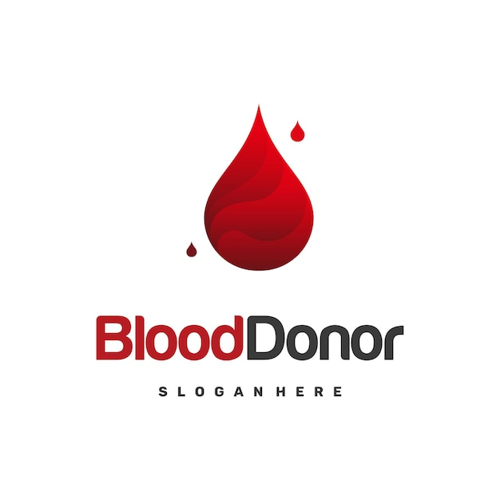
Premium
Blood logo
Blood drop
Cardiology
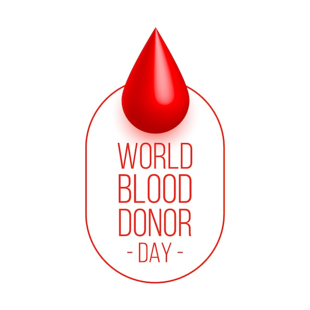
Donor
Cure
Plasma
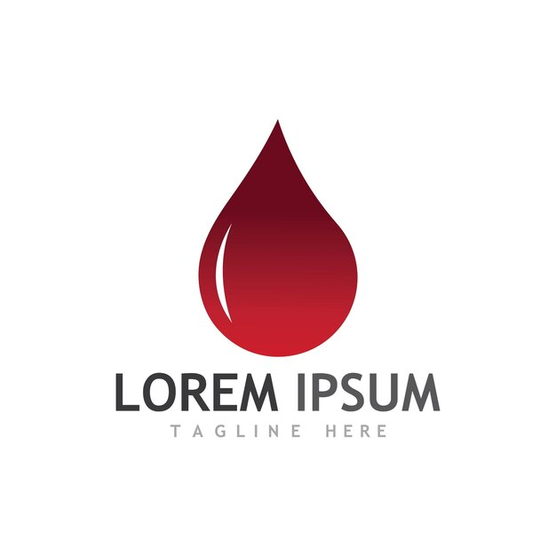
Premium
Blood logo
Blood drop
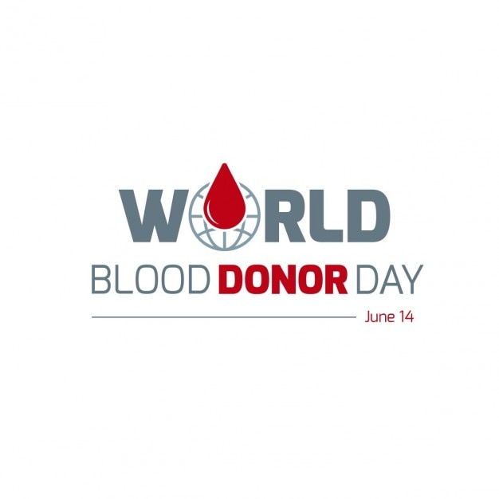
Blood transfusion
Paramedic
Blood drop
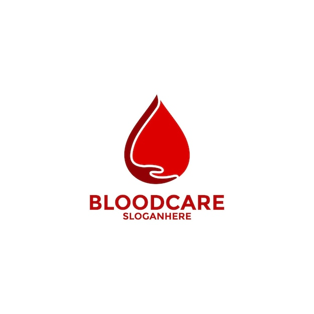
Premium
Blood logo
Blood drop
Hospital sign
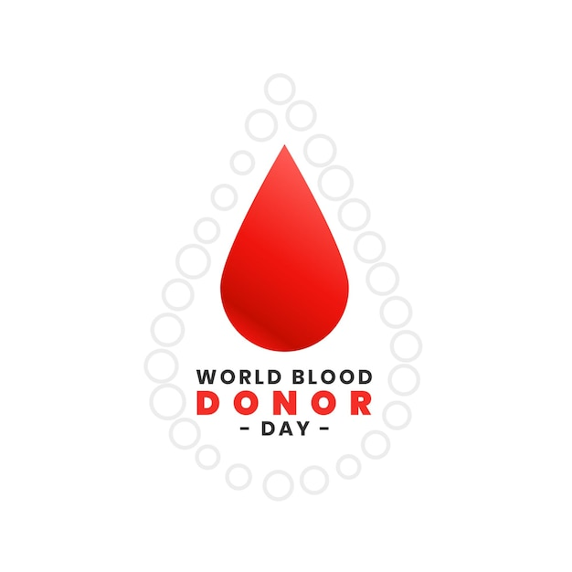
Donor
Cure
Plasma
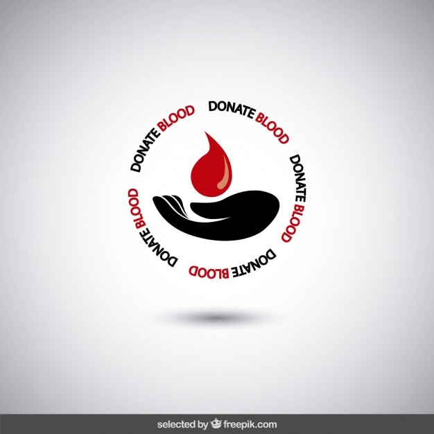
Blood logo
Blood drop
Next Page
Page 1 of 100
Page
of 100
Free Vector | Red Droplets Glyph Style